Accessories
Accessories fill 8 slots, and each one gives two effects. You craft them at the Forge in Raid Lobby. They never drop from a gacha.
Types
| Type | Slots | Effect 1 | Effect 2 | Seen on your character |
|---|---|---|---|---|
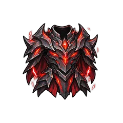 Armor | 1 | Energy | Damage | Yes |
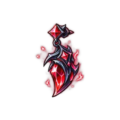 Earring | 2 | Energy | Luck | No |
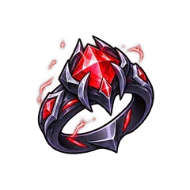 Ring | 2 | Damage | Coins | No |
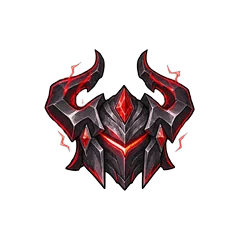 Helmet | 1 | Coins | XP | Yes |
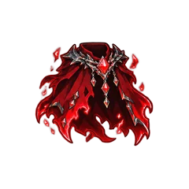 Cloak | 1 | Coins | Drop | Yes |
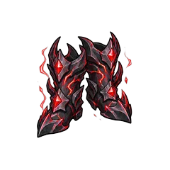 Boots | 1 | Drop | XP | Yes |
Accessories have no crit, attack speed or radius effects. An empty slot gives nothing.
The Helmet, Cloak, Armor and Boots show on your character, and each tier has its own look. Rings and Earrings only show as icons.
Tiers and Crafting
Tier is what matters, not the world where you craft. A Godkiller item from World 1 equals one from World 6.
| Tier | Items | Bonus for each effect | Forge Core for this step | Forge Core in total |
|---|---|---|---|---|
| Recruit | 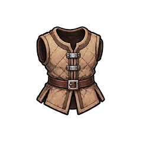 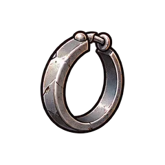 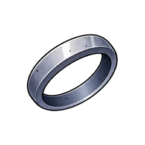 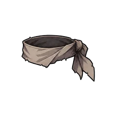 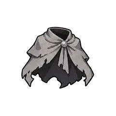 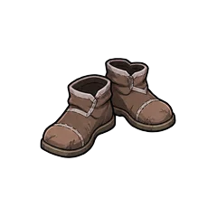 | +5% | 200 | 200 |
| Fighter | 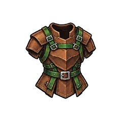 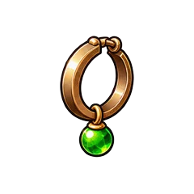 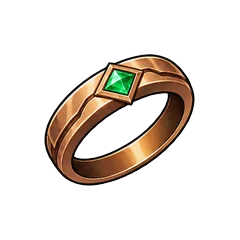 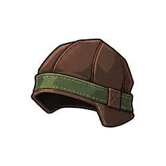 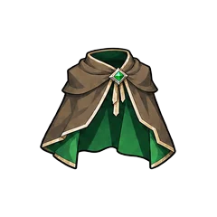 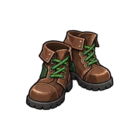 | +10% | 600 | 800 |
| Veteran | 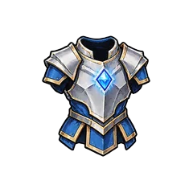 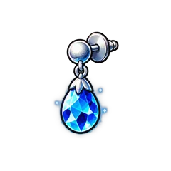 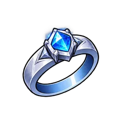 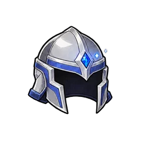 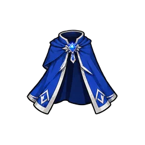 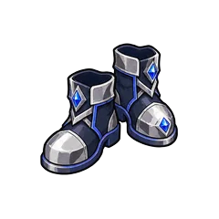 | +20% | 1,800 | 2,600 |
| Champion | 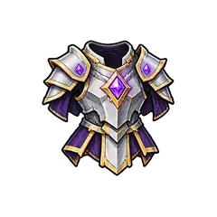 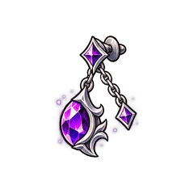 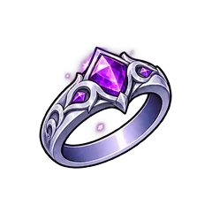 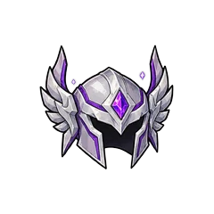 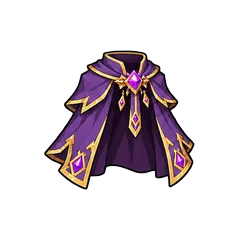 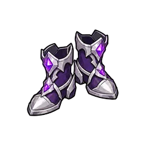 | +40% | 5,400 | 8,000 |
| Overlord | 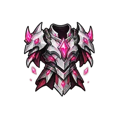 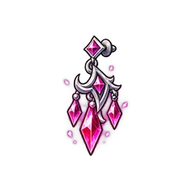 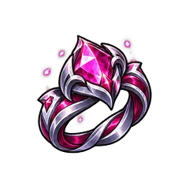 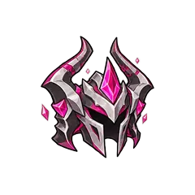 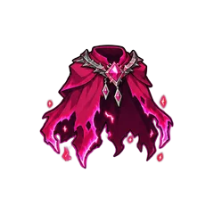 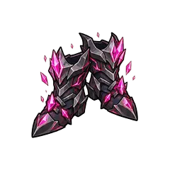 | +80% | 16,200 | 24,200 |
| Sovereign | 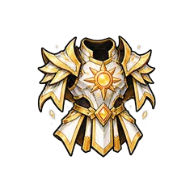 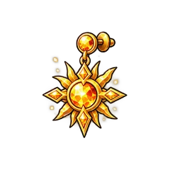 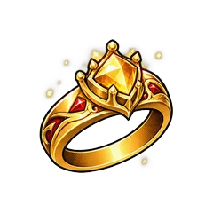 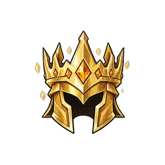 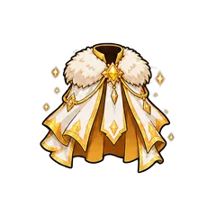 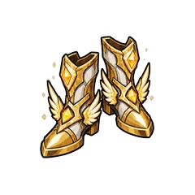 | +160% | 48,600 | 72,800 |
| Godkiller | +320% | 145,800 | 218,600 |
- A Recruit item is made from Forge Core.
- Every higher tier is made from the item one tier below in the same slot, plus Forge Core. The old item goes into the new one.
- Crafting always works and costs no coins. All slots have the same prices.
- An equipped or locked item stays equipped or locked when you upgrade it.
- If your inventory is full, you can't craft a new Recruit item, but upgrades still work. You start with 50 places, and the Large Storage gamepass raises that to 150.
- Equip Best fills every slot with the best items for the stat you choose.
- You can trade accessories with other players. The trade has a fee in Gems.
Full Set Bonus
Effects of the same stat add up. This table shows what each stat reaches with every item at Godkiller tier.
| Stat | Items that give it | All Godkiller |
|---|---|---|
| Energy | Armor, 2 Earrings | ×10.6 |
| Damage | Armor, 2 Rings | ×10.6 |
| Coins | 2 Rings, Helmet, Cloak | ×13.8 |
| Luck | 2 Earrings | ×7.4 |
| Drop | Cloak, Boots | ×7.4 |
| XP | Helmet, Boots | ×7.4 |
Forge Core
Forge Core is the one crafting resource for all slots and tiers. Secret bosses and sword bosses drop it on every kill, and later worlds drop more. Your drop bonus adds to it.
| World | Secret boss | Forge Core per kill | Sword boss, per kill |
|---|---|---|---|
| World 1 | Scouter Sentinel | 4 | — |
| World 2 | Emperor's Vanguard | 8 | 2 |
| World 3 | Sannin Sentinel | 16 | — |
| World 4 | Tailed Guardian | 32 | 8 |
| World 5 | Corsair Captain | 64 | — |
| World 6 | Emperor's Right-Hand | 128 | 32 |
Gate bosses, normal enemies and raids don't drop Forge Core.